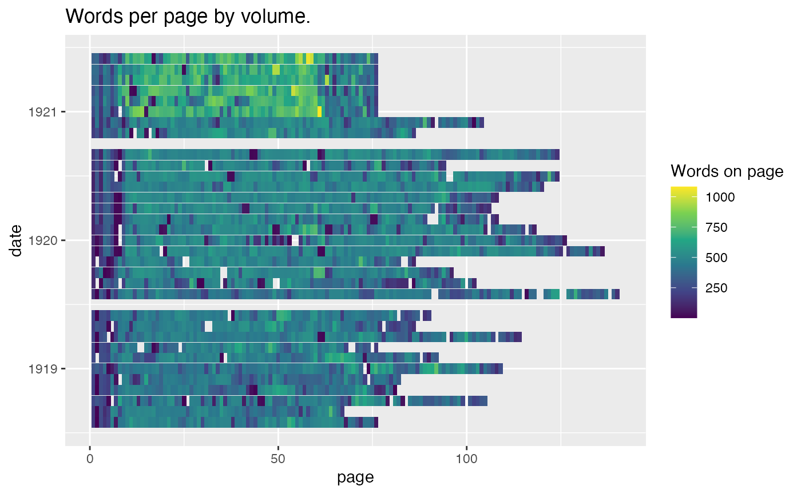
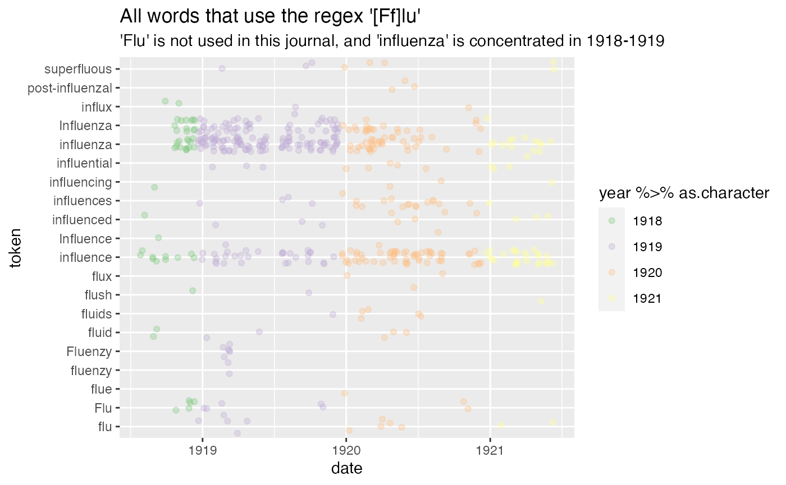
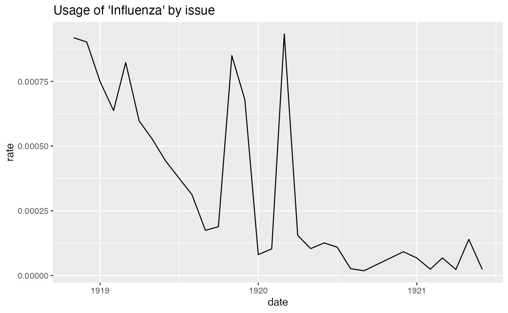
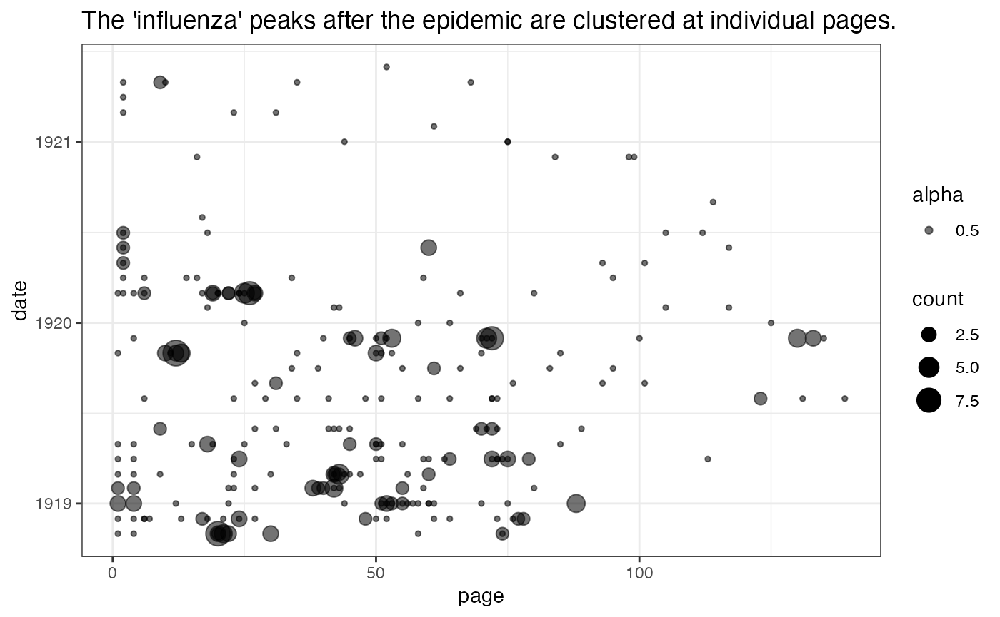
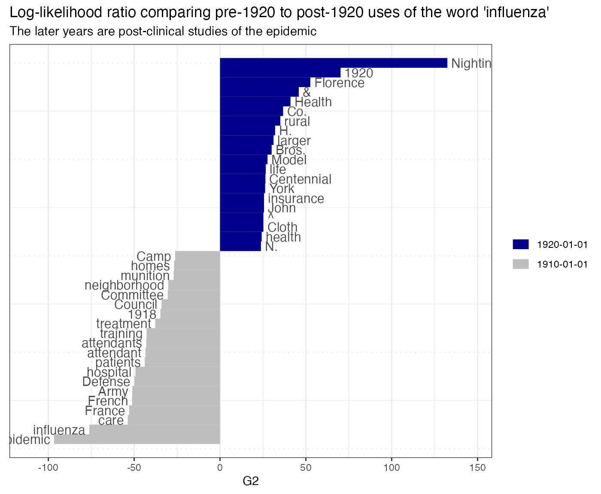

Flu.RmdThe Hathi Trust has made available 17 million volumes of text with word counts at the page level. 1
The purpose of this package is to allow you to quickly work with tidy-formatted data for any of these books. These features are useful input into a wide variety of tasks in natural language processing, visualization, and other areas.
First, some imports. hathidy is this package: ggplot2 is for visualization, and dplyr and tidytext together supply a number of useful functions for working with wordcount data. I would simply import tidyverse here, which would take care of almost everything here, but generally they don’t want you to put it in package dependencies.
library(hathidy)
library(tidyverse)
#> ── Attaching packages ─────────────────────────────────────── tidyverse 1.3.1 ──
#> ✓ ggplot2 3.3.3 ✓ purrr 0.3.4
#> ✓ tibble 3.1.1 ✓ dplyr 1.0.5
#> ✓ tidyr 1.1.3 ✓ stringr 1.4.0
#> ✓ readr 1.4.0 ✓ forcats 0.5.1
#> ── Conflicts ────────────────────────────────────────── tidyverse_conflicts() ──
#> x dplyr::filter() masks stats::filter()
#> x dplyr::lag() masks stats::lag()As an example, let’s take a volume of nursing data.
I originally fetched this data using the hathi package from ROpenSci, but that package has been abandoned.
Start with a seed volume, and move on to metadata.
bibliography_entry = hathi::hathi_bib(htid = "uma.ark:/13960/t0dv2df4m")$items
# Keep only the Umass entries.
htids = bibliography_entry$htid %>%
keep(~.x %>% str_detect("uma.ark"))
metadata = bibliography_entry %>%
filter(htid %>% str_detect("uma.ark")) %>%
mutate(enumcron = enumcron %>% str_replace_all("[^0-9 ]", "")) %>%
separate(enumcron, c("vol", "no", "year"), convert = TRUE) %>%
select(htid, vol, no, year) %>%
mutate(month = ifelse(vol == 10, no+4, no)) %>%
mutate(date = as.Date(ISOdate(year, month, 1)))
metadata %>% write_feather("../ext/data/nursing_volumes.feather")
metadata_file = system.file("extdata", "nursing_volumes.feather", package = "hathidy")
library(arrow)
#>
#> Attaching package: 'arrow'
#> The following object is masked from 'package:utils':
#>
#> timestamp
metadata = read_feather(metadata_file)
a = hathi_counts(metadata$htid[1])
#> Saving downloaded books to /var/folders/84/dvp0h0kn22qcx_0z_hn_b36w0000gn/T//RtmpUNgmoO; to speed up subsequent runs and be polite to the HTRC servers, set a permanent local cache like 'options('hathidy_dir' = /Users/bschmidt/hathi-ef)'.
page_counts = a %>% group_by(page) %>% summarize(count = sum(count), .groups="drop") %>% pull(count)
options(hathidy_dir = "~/hathi-features/")
data = hathi_counts(metadata$htid)
# The first volume in this set is notes.
head(data)
#> # A tibble: 6 x 4
#> page token count htid
#> <int> <chr> <int> <chr>
#> 1 1 , 10 uma.ark:/13960/t8mc9ss6h
#> 2 1 . 4 uma.ark:/13960/t8mc9ss6h
#> 3 1 's 1 uma.ark:/13960/t8mc9ss6h
#> 4 1 0330 1 uma.ark:/13960/t8mc9ss6h
#> 5 1 1 2 uma.ark:/13960/t8mc9ss6h
#> 6 1 10 1 uma.ark:/13960/t8mc9ss6hOnce the HTIDs are known, we can load the data in. Note the global directory at the front here. It’s off by default, again so this can live online: but I strongly recommend filling in this field whenever using the package. You can store features in the current working directory, (probably in a folder called “features”), or use a global one. If you think you might work with Hathi more than once, having a local location might make sense: but for reproducible research, you should store just the files used in this particular project. If you don’t specify any location, feature counts will be downloaded to a temporary directory and deleted at the end of the session, which is less than ideal. (Among other things, your code will take much, much longer to run on a second or third run.)
nursing = data %>% inner_join(metadata)
#> Joining, by = "htid"You can get an overview of just the words per page in these volumes. This instantly makes clear that there’s a difference between the last 6 volumes and the first six in how they treat notes.
nursing %>%
group_by(page, htid, date) %>%
summarize(count=sum(count)) %>%
ggplot() +
geom_tile(aes(x=page, y = date, fill = count)) +
scale_fill_viridis_c("Words on page") +
labs(title = "Words per page by volume.")
#> `summarise()` has grouped output by 'page', 'htid'. You can override using the `.groups` argument.
When are they talking about the ‘flu’ here? We’ll look
nursing %>%
ungroup %>%
filter(token %>% str_detect("[Ff]lu")) %>%
group_by(token) %>%
# Only words that appear more than twice
filter(sum(count) > 2) %>%
ggplot() +
geom_point(aes(x=date, y = token, color=year %>% as.character), alpha = 0.33, position="jitter") +
scale_color_brewer(type='qual') +
labs(title="All words that use the regex '[Ff]lu'", subtitle = "'Flu' is not used in this journal, and 'influenza' is concentrated in 1918-1919")
Using tidytext, we can add tf_idf scores to every column. Here’s a chart of the highest TF-IDF words distinguishing each volume.
nursing %>%
group_by(date) %>%
mutate(total_words = sum(count)) %>%
filter(token %>% tolower == "influenza") %>%
summarize(count = sum(count), rate = sum(count)/total_words[1]) %>%
ggplot() + geom_line(aes(x=date, y = rate)) +
labs(title = "Usage of 'Influenza' by issue")
nursing %>%
filter(token %>% tolower == "influenza") %>%
ggplot() + geom_point(aes(y = date, x = page, size = count, alpha = 0.5)) + theme_bw() +
labs(
title = "The 'influenza' peaks after the epidemic are clustered at individual pages."
)
library(tidytext)
field = quo(date)
nursing %>%
mutate(date = date %>% lubridate::round_date("year")) %>%
group_by(!!field, token) %>%
summarize(count=sum(count)) %>%
bind_tf_idf(token, !!field, count) %>%
filter(str_detect(token, "^[a-z]{4,}$")) %>%
mutate(rank = rank(-tf_idf, ties.method = "random")) %>%
filter(rank <=5) %>%
ggplot() +
geom_text(aes(y=-rank, label = str_c(rank, ". ", token, " (", count, ")" )), x = 0, adj = 0) +
facet_wrap(vars(!!field), scales = "free_y") + theme_void()
#> `summarise()` has grouped output by 'date'. You can override using the `.groups` argument.
library(quanteda.textstats)
library(quanteda.textplots)
flu_pages = nursing %>% filter(token %>% tolower == "women") %>% distinct(date, page)
quanteda_dfm = nursing %>%
inner_join(flu_pages) %>%
mutate(date = lubridate::floor_date(date, lubridate::years(10))) %>%
group_by(token, date) %>%
anti_join(tidytext::stop_words, by = c("token" = "word")) %>%
summarize(count = sum(count)) %>%
cast_dfm(date, token, count)
#> Joining, by = c("page", "date")
#> `summarise()` has grouped output by 'token'. You can override using the `.groups` argument.
# Calculate keyness and determine 1910 as the target group
result_keyness <- textstat_keyness(quanteda_dfm, target = "1920-01-01", measure = "lr" )
# Plot estimated word keyness
textplot_keyness(result_keyness) + labs(title = "Log-likelihood ratio comparing pre-1920 to post-1920 uses of the word 'influenza'",
subtitle = "The later years are post-clinical studies of the epidemic ")
object.size(nursing) / 1000000
#> 38.8 bytesBoris Capitanu, Ted Underwood, Peter Organisciak, Timothy Cole, Maria Janina Sarol, J. Stephen Downie (2016). The HathiTrust Research Center Extracted Feature Dataset (2.0) [Dataset]. HathiTrust Research Center,http://dx.doi.org/10.13012/J8X63JT3.↩︎